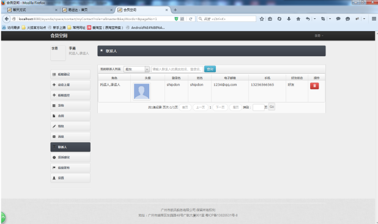

聊天方式简介
在找船或找货过程中，与代理人沟通的聊天记录，可在消息列表中查看到。单击一条记录进入聊天页面可继续聊天，在聊天页面可传文字信息、语音信息、传文件。 实现了即时通讯，方便的语音聊天、文件传输功能，更好的促进货物运输，高效、快捷完成。
功能操作
1.1联系人(添加会话好友)
a) 登录自己的会员空间后，选择左边“联系人”模块，界面如上图所示。
添加联系人界面
b) 你可以到前台首页，界面如图添加联系人界面所示。点击右边联系人列表中的某一个，与他进行聊天，界面如上图所示，只要聊过天你们两个就是好友。
c) 然后回到你的个人空间，查看联系人列表，刚才和你聊天的人的信息就出现在会话列表中，界面如上图所示。
1.2联系人(添加子账号)
a) 如果你是承运人，你可以到会员空间“设置”模块中，选择“子账号”，对子账户进行添加编辑，界面如上图所示。
b) 然后再次查看联系人列表，选中“子账号”下拉，点击查询，你刚才所有的“子账号”信息就会出现在列表中，界面如上图所示
1.3联系人(添加货主、船东)
a) 如果你是实名认证过，你可以到会员空间“设置”模块中，选择“代理关系”，对你代理的货主、船东进行添加编辑，界面如上图所示。

b) 然后再次查看联系人列表，选中“货主”、“船东”下拉，点击查询，你刚才所有添加信息就会出现在列表中，界面如上图所示
2进行沟通
聊天界面
进行沟通:用户进入自己的会员空间后，选择左边“联系人”模块，右边页面可以看到自己的联系人列表，点击联系人头像可以进入到和该联系人聊天的页面，用户聊天页面如图货代聊天界面所示，船代聊天页面如上图所示。在聊天页面中你可以发送文字、图片、文档和语音。